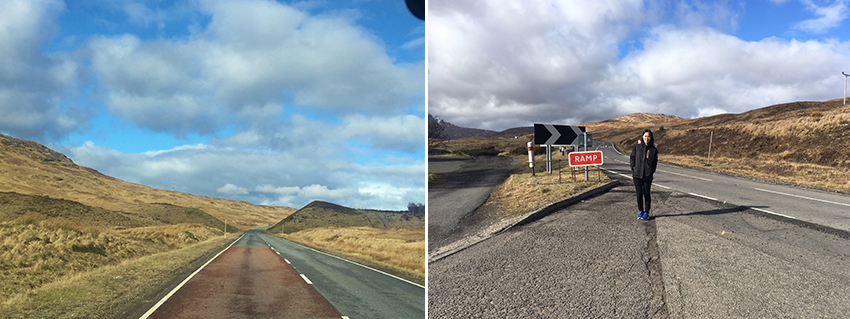
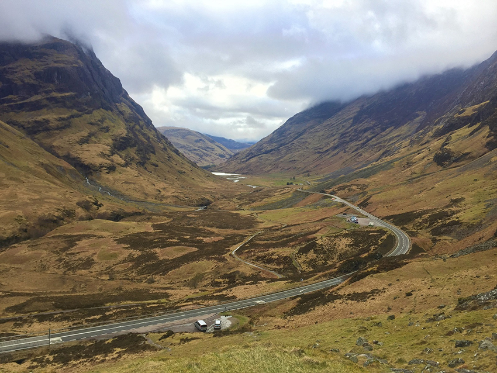
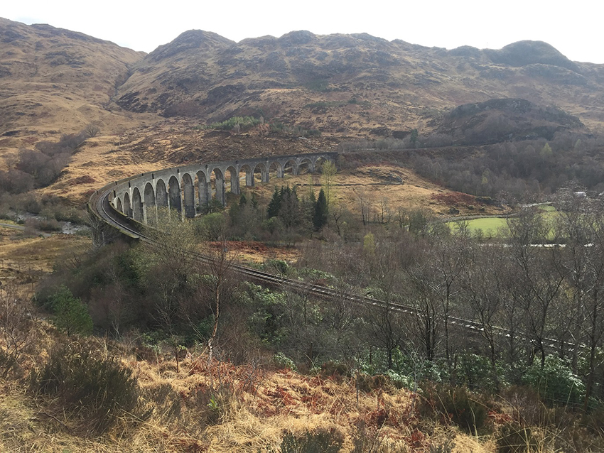
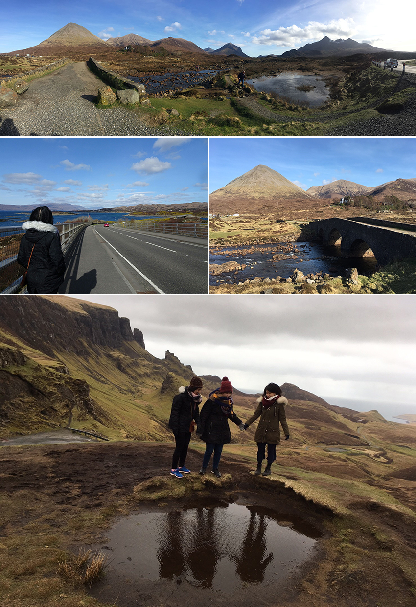
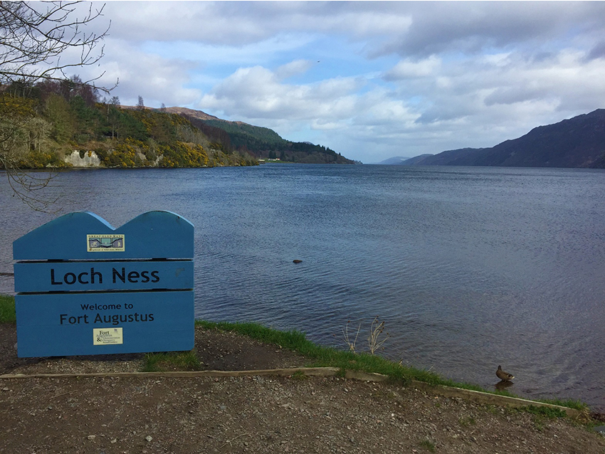
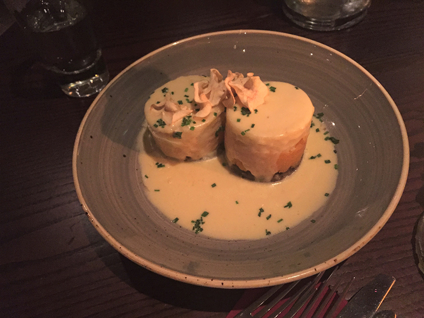
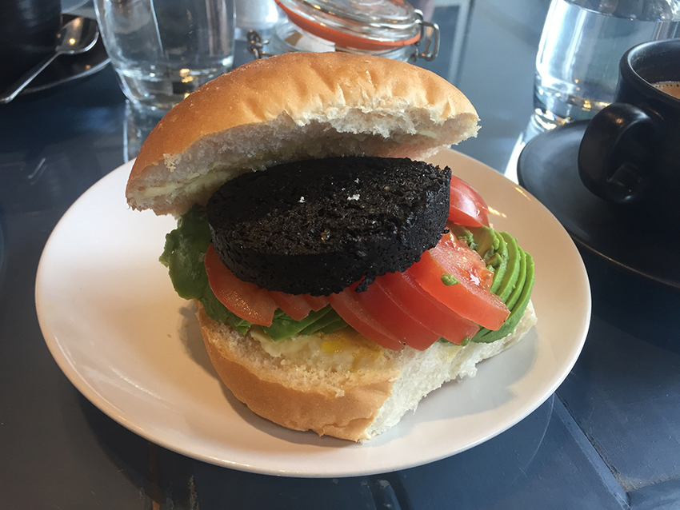

在研究所時期利用春假和空堂時間，和好友規劃了一趟以蘇格蘭高地為主的蘇格蘭小旅行。因為時間有限，加上蘇格蘭高地地廣人稀交通不便，我們報了當地四天三夜的高地旅遊團，也是網路上最多人推薦的旅遊方式，旅行社組成是以在愛丁堡或Glasgow念書或已畢業的年輕人為主，一路上不僅會介紹高地的歷史，也會根據團員的需求和天氣彈性的微調行程。
第一天從Glasgow出發遠離市區後，窗外的景色漸漸轉為蕭條卻不失單調，空曠的郊外和雄偉的自然景色，讓人心情不禁放鬆遼闊的起來。
|  |
蘇格蘭高地少不了的就是許多山坡起伏，由於並不是商業性很強的地方，許多拍照的地方都是導遊帶著大家一路往上走才到達的私房景點，平地上並沒有看到明確的方向指標，因此建議一定要穿好走路的鞋子，格蘭科峽谷(Glencoe)就是個必須一路往上爬標準的例子。
|  |
另一個讓我們期待很久的景點是格蘭芬南高架橋(Glenfinnan Viaduct)，是哈利波特電影中霍格華茲特快車行駛經過的峽谷，由於旅行時間是四月初火車停駛，只能對著高架橋景色留影，而每年的夏天旺季都會有火車行駛經過，不少攝影愛好者都會事先卡位等待時機拍攝。
|  |
一路向北行駛後會抵達高地的著名景點天空島(Isle of Skye)，穿越連接蘇格蘭本島和天空島的跨海大橋，島上有不少的景點可以去探索，像是電影變形金剛中出現的巨石—老人岩(Old Mann of Storr)，以及Cuillin的火山峰群(仙女池)，都是觀光客必去的朝聖景點。
|  |
離開天空島要回Glasgow時，特意走另一條路經過了傳說中有水怪的尼斯湖Loch Ness，或許是尼斯湖水怪給人的刻板印象太深，真正的尼斯湖比我想像中的樸素一些，雖然旁邊的紀念品店有各種可愛版或是現實版的水怪相關商品、湖邊也有小心水怪出沒的標語，但尼斯湖整體看起來依舊是個平易近人、歐洲常看到的湖泊。
|  |
再來是食物方面，到蘇格蘭沒有吃過Haggis和Black pudding就不能說到過蘇格蘭了，Haggis簡單來說就是羊雜，把羊肉、牛肉、內臟和洋蔥等調味料放在用羊胃做成的袋子裡烹煮，因為以前牧羊人早出晚歸，Haggis是方便攜帶且能補充營養的主要食物。因此家家戶戶、衍伸到現在每間餐廳的Haggis食材味道都不盡相同，若是怕羊騷味重，也可以從Haggis創意料理下手，像是照片中的就只有底下深色一層Haggis，搭配其他食材一起會更好入口。
|  |
Black pudding黑布丁則是血腸，用動物的血、內臟和碎肉做成香腸的樣子，相較於不吃動物內臟的外國人，對台灣人來說，這兩樣料理都是容易嘗試的，畢竟我們對於吃動物的血、內臟等等都習以為常，但畢竟料理習慣不同，黑布丁也是推薦從創意料理下手，朋友推薦的黑布丁漢堡就既能嘗到黑布丁的味道，又能搭配一旁的配菜美味好下口。
|  |
相較於英格蘭的名氣，大部分人對蘇格蘭並不是那麼熟悉，相對的遊客也不如英格蘭多，反而能夠更能貼近當地的感覺，對於這段旅程不管是風景或是美食都相當滿意，推薦大家在疫情結束後，可以找機會來一趟蘇格蘭高地旅行，體會大自然的廣闊美好。